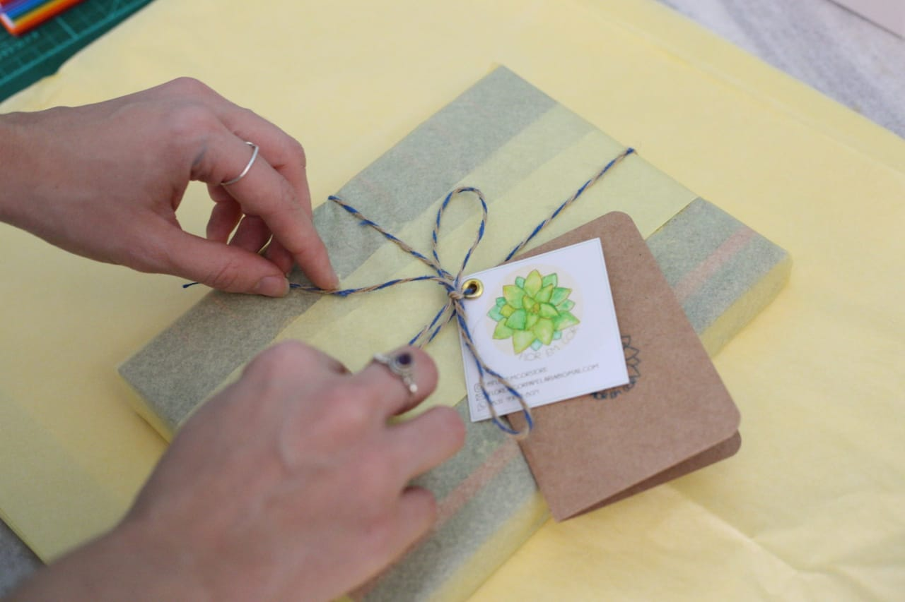

Olá, tudo bem? O ateliê flor em cor foi idealizado por Maria Luiza, entusiasta de artes manuais desde pequena, influenciada por sua avó materna, que por muito tomou o artesanato com crochê, bordado e tricô como funções diárias de amor, dedicação e carinho.
O ateliê flor em cor foi idealizado por Maria Luiza, entusiasta de artes manuais desde pequena,influenciada por sua avó materna, que por muito tomou o artesanato com crochê, bordado e tricô como funções diárias de amor, dedicação e carinho.
Todos os produtos do Ateliê Flor em Cor são carinhosamente pensados e personalizados de forma completamente artesanal da escolha dos materiais à embalagem, seguindo um modelo respeitoso de produção em pequena escala.